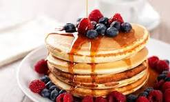

Pancake Recipe

Mix the ingredients together and pour into a heated skillet on medium heat with light grease and cook till bubbles form on the surface Then flip.
Ingredients
- All Purpose Flour
- 2 Tablespoons Sugar
- 1 tablespoon baking powder
- 1/2 teaspoon salt
- 1 cup milk
- 1 egg
- 2 tablespoons melted butter or oil
- Optional: vanilla extract
Steps
- Mix Dry Ingredients: In a bowl, whisk together flour, sugar, baking powder, and salt.
- Combine Wet Ingredients: In another bowl, whisk together milk, egg, and melted butter (and vanilla if using).
- Combine: Pour the wet ingredients into the dry ingredients and stir until just combined (a few lumps are okay).
- Cook: Heat a non-stick skillet or griddle over medium heat and lightly grease. Pour batter onto the skillet and cook until bubbles form on the surface, then flip and cook until golden brown. And serve with your favorite topping